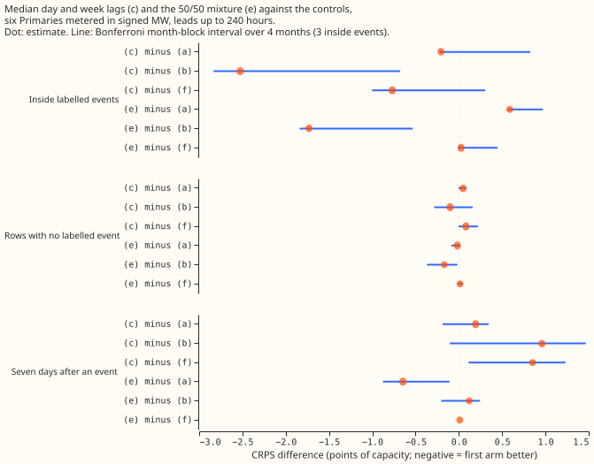
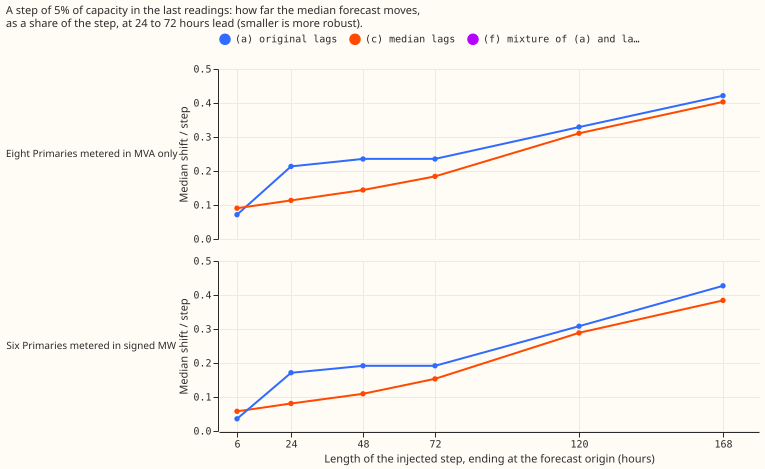
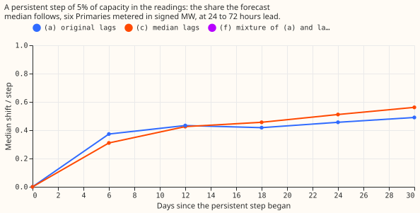
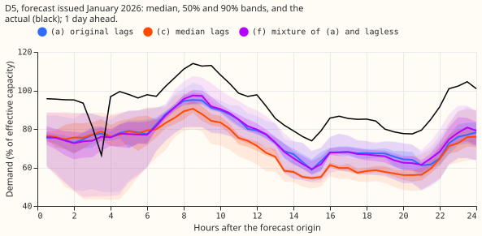
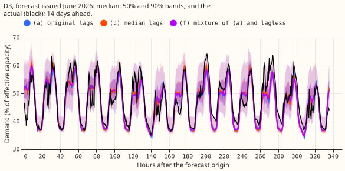
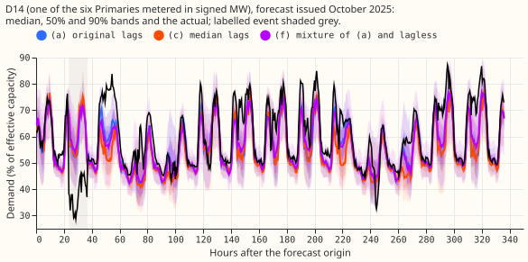
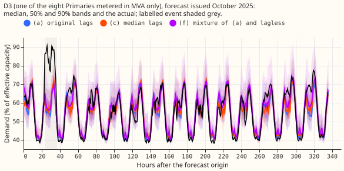
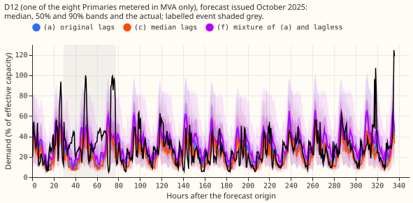
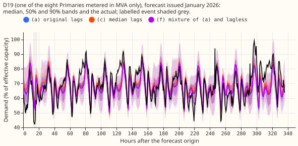

Do the median of the last 7 same-time-of-day readings and of the last 3 same-time-of-week readings, in place of the day and week power lags, make the XGBoost demand forecast far less sensitive to a load-shift event that lasts under 7 days?
Median day and week lags make the median forecast 20% to 50% less sensitive to a step in the last 1 to 3 days of power, but not more accurate. The shielding shrinks as the event lengthens and is gone at 7 days. A stuck meter is shielded almost completely, but a dropout to zero and a spike are not. The clean-row loss against the original lags is +0.050 points of capacity at the six Primaries metered in signed megawatts. Two fits of the original lags differ by 0.06, so the loss is not separable from fit-to-fit noise. NGED's event labels are incomplete, so "rows with no labelled event" may hold unlogged events, and every real-event slice undercounts. Every number is interim and unaudited.



Figures 4 and 5 show a day-ahead and a fourteen-day forecast with no labelled event, and figures 6 to 9 show forecasts issued 12 hours or more before a labelled event (labels D3, D12, D14, and D19 are anonymised Primary labels).






Results
Scores are CRPS-like pinball loss in points of effective capacity; a contrast is the first arm minus
the second, so negative favours the first. Arms: (a) the original lags (experiment 402), (b) the
lagless forecast (experiment 392), (c) the median lags, (e) the 50/50 mixture of the probability
distributions of (c) and (b), (f) the 50/50 mixture of (a) and (b). The signed-MW six
are the 6 Primaries metered in signed megawatts (D5, D10, D11, D14, D16, D9); the MVA-only eight are
the 8 metered only in megavolt-amperes. Months are the resampling unit (4 scored months, 3 with
labelled events). Every interval below is a month-block interval at the Bonferroni level of 99.72%
for the 18 pre-registered contrasts (a 95% level would be narrower); all are in contrasts.csv.
- Speed. The 64 fits of arm (c) took 6,442 s on 6 CPU cores, including the median feature build.
- Sweep share at 24-72 h leads, step 5% of capacity (figure 2). At the signed-MW six, for an event of 24, 48, and 72 hours, arm (c) moves the median forecast by 0.081, 0.109, and 0.153 of the step, against 0.171, 0.192, and 0.192 for (a). At 5 and 7 days the shares are 0.289 and 0.384 for (c), 0.308 and 0.427 for (a). At the MVA-only eight the shares for 24, 48, and 72 hours are 0.113, 0.144, and 0.184 for (c) against 0.213, 0.236, and 0.236, and at 7 days 0.403 against 0.422. The lagless control moves by exactly 0. A step of 2.5% gives shares within 0.02 of these.
- Very short events leak more. At an event of 6 hours, (c) leaks 0.058 against 0.036 for (a) at the six, because the origin lag, which the median leaves single, carries more weight in (c). Moving the origin lag alone by 5% moves the median by 0.054 of the step in (c) against 0.006 in (a) at the six, and 0.087 against 0.043 at the MVA-only eight.
- Band width and coverage. The 5% to 95% band width does not change with the injected step in any arm (ratio 0.996 to 1.003). Clean-row coverage of the 5-95 band is 0.853 for (c) and 0.863 for (a) at the six for an event of 48 hours, and 0.898 and 0.906 at a widening of 1.15. Event-row coverage is 0.722 for (c) and 0.764 for (a) at 48 hours, and 0.785 and 0.825 at 1.15.
- Bad data, mean shift of the median, signed-MW six, lead 24-72 h (points of capacity). Stuck 24 h: -0.036 for (c), -2.308 for (a). Dropout to zero for 6 h: +1.141 for (c), +0.926 for (a). Spike x20: +4.340 and +3.192. Spike x4: +2.706 and +1.616. The median shields a stuck meter but not a dropout or a spike, because a single bad reading at the origin lag passes straight through.
- Level change (5% of capacity for 30 days). The median forecast follows the new level slowly at first and further later: 0.310 of the step by day 6, 0.511 by day 24, 0.562 by day 30 for (c) at the six, against 0.373, 0.456, and 0.490 for (a).
- Clean rows, signed-MW six (rows with no labelled event, lead 0-240 h). (c) minus (a) is +0.050 [-0.004, +0.087], with 3 of 4 months worse. (c) minus (b) is -0.101 [-0.285, +0.159]. (c) minus (f) is +0.082 [-0.002, +0.220]. (e) minus (f) is +0.014 [-0.008, +0.045]. The early stop rule (clean-row loss of 0.10 or more) does not fire.
- Noise floor. Refitting arm (a) on CPU with this experiment's settings and scoring it against experiment 402's stored forecast on the 2026-01 refit month, over all rows, gives a difference of -0.060 at the six and +0.002 at the MVA-only eight. The CPU refit of (a) scored better than the stored (a), so a contrast of (c) against a CPU-fitted (a) could be about +0.11 at the six, which is at the stop limit of 0.10. This is one month and one refit, so it indicates the size of the noise and does not bound it.
- Harm rows (during a labelled event), signed-MW six. (c) minus (a) is -0.207 [-0.219, +0.827], 1 of 3 months worse. (c) minus (f) is -0.769 [-1.001, +0.304]. (e) minus (a) is +0.588 [+0.575, +0.971], 3 of 3 months worse. No arm beats (a) with an interval that excludes zero (the prediction P3 required -0.1 with an interval excluding zero).
- Harm rows, MVA-only eight. (c) minus (a) is +0.690 [+0.050, +0.970], 3 of 3 months worse, and (e) minus (a) is -1.423 [-1.911, -0.248], 0 of 3 months worse. The groups disagree in sign.
- After a labelled event ends (days 7 on), signed-MW six. (c) minus (a) is +0.194 [-0.188, +0.345]. (c) minus (f) is +0.852 [+0.111, +1.232], 3 of 3 months worse. At the MVA-only eight, (c) minus (a) is -0.123 [-0.358, -0.007].
- Avoidable curtailment cost (widening 1.15, units of the cost report). On the three Primaries with event rows, (a) 3.394e6, (b) 2.152e6, (c) 3.422e6, (e) 2.374e6, (f) 2.218e6. Over all rows at the six, (a) 4.507e7, (b) 5.615e7, (c) 4.660e7, (e) 4.602e7, (f) 4.526e7. Arm (c) costs slightly more than (a) in both.
- 12-36 h lead band, (c) minus (a). Signed-MW six: clean rows +0.030 [-0.006, +0.064], harm rows -0.188 [-0.221, +0.814], after the event +0.371 [+0.019, +0.713]. MVA-only eight: clean rows +0.015 [-0.040, +0.063], harm rows +0.789 [-0.039, +1.114]. The signs match the 0-240 h band.
- Predictions. P1 holds for the leak of events up to 48 hours: 0.081 to 0.109 at 24 to 72 hour leads, under 0.15, rising to 0.384 at 7 days. The plan's baseline for (a) of 0.38 to 0.41 came from experiment 392's column-level sweep (a step in all three lags) and matches only (a)'s share at 7 days (0.427); for events up to 48 hours, (a) leaks 0.17 to 0.19. P2 holds on the rounding edge: +0.0498 against the limit of +0.05, and the noise-floor control suggests the fair figure may be nearer +0.11. P3 fails: harm rows show no gain with an interval excluding zero at the six, and (c) is worse at the MVA-only eight. P4 narrowly fails: the origin lag alone moves arm (c) by 0.054 at 24 to 72 h at the six (predicted 0.01 to 0.05), and by 0.087 at the MVA-only eight.
- Checks. Median minus mean forecast per site was not computed, because the stored tables hold
quantiles and no mean forecast. The robust lags assert the leakage rule of
origin_lags. The noise-floor difference (-0.060 at the six) is of the same size as the clean-row loss, so the clean-row loss is reported as not separable from noise. The harm-row contrast changes sign between the two groups, so no pooled claim is made. The leave-one-Primary-out check was not run.
Caveats
- Events longer than 7 days defeat any 7-day median. At 7 days the share is 0.37 to 0.40.
- The median follows a genuine level change more slowly early. Arm (c) reaches 0.31 of a persistent step by day 6 against 0.37 for (a), then overtakes (a) (figure 3).
- Unlogged events. NGED's event labels are incomplete, so rows with no labelled event may hold events, and harm-row counts are lower bounds.
- CPU against GPU. The fits ran on CPU and experiment 402's on CUDA. The noise-floor control differs by 0.06 at the six, from one month and one refit.
- Three event months and 18 contrasts. The Bonferroni family is 18 contrasts. The (c) minus (e) contrasts are descriptive.
- Not run. Arm (d) (robust plus original lags, demoted by the brief), the cold-night rows, the NRA-corrected actuals of experiment 455, and the CRPS at widenings 1.05 and 1.10.
- Production options for a missing or stale day. If a day of power is missing, the 7-reading median can use the remaining readings, as the fit does, or fall back to the lagless forecast. This page describes the options and leaves the choice to the maintainer.